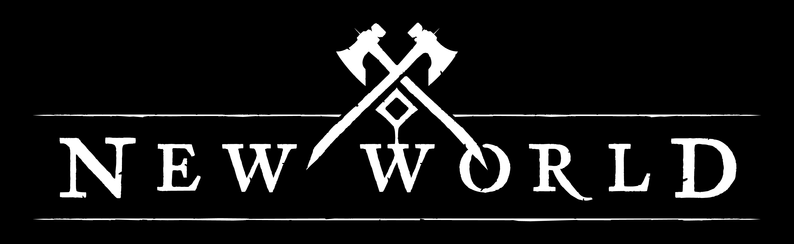

Sobre New World
New World é um jogo de interpretação de personagens online e em massa para multijogadores da Amazon Game Studios.
O jogo é situado em meados dos anos 1600, mesmo período dos primeiros assentamentos feitos por colonizadores ingleses
na América do Norte,
em uma terra fictícia chamada Aeternum, junto ao Oceano Atlântico, localizada perto das Bermudas.
New World é um ambiente cheio de ursos, lanças, arcos e flechas, e legiões de criaturas mortas-vivas desesperadas para expulsá-lo
de suas terras,
onde o jogador pode procurar recursos, criar itens e lutar com, e contra, outros jogadores.